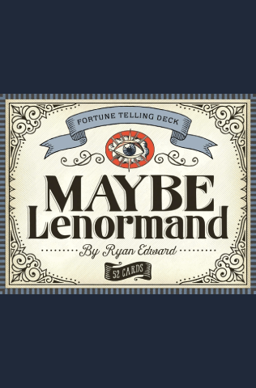

现代雷诺曼 · 作者 Ryan Edward
Maybe Lenormand（也许雷诺曼）
现代
超现实
波普艺术
小众口碑
设计驱动
Ryan Edward 创作的现代雷诺曼：暗黑、时髦、超现实，带着波普艺术的味道——当代牌组里最有口碑的小众之作。画面像电影，略带不祥，当代感一望即知。

Ryan Edward（瑞安·爱德华）的 Maybe Lenormand（也许雷诺曼）是当代雷诺曼里最有口碑的小众之作——暗黑、时髦、超现实，带着波普艺术的调子，在视觉上正好站在 Blue Owl 那类民艺风传统牌的对面。多数雷诺曼牌组不是落在维多利亚风，就是落在现代绘画风，Maybe 却推向了完全不同的地方：像电影，略带不祥，当代感一望即知。
自从由 Game of Hope Press 发行以来，这副牌积累了一批忠实拥趸，首刷常常售罄。它就是那种会被读者拍开箱照发到网上的牌。
Edward 的视觉语言取自 20 世纪中叶的插画、超现实主义、老照片，以及一点黑色电影式的戏剧感。心是一颗被刺穿、缠着绷带却仍在跳的东西。棺材干净而肃穆，不做多余装饰。蛇在宝石般的高反差里盘着。整副牌有种杂志专题的气质，每张牌背后都有很强的设计纪律。
配色克制，反差很大，有些画面刻意留了含混之处——把余地留给解牌的人自己填。这副牌值得细看。
适合被设计驱动的当代雷诺曼吸引的人。如果你嫌传统牌组画得太老气，又嫌 Gilded Reverie 这类艺术导向的现代牌太华丽，Maybe 正好落在中间——它是给那些会看设计博客、在意牌本身这件物品而不只在意系统的人。
对用传统牌入门、如今想要点锋芒的人来说，它也是很好的第二副牌。
标准 36 张，沿用古典编号。解读方式完全传统，只有画面是当代的。部分印次随牌附一本小册子，收录 Edward 自己写的关键词解释。
由 Ryan Edward 通过 Game of Hope Press 自行出版。印量有限，常常缺货，二手价往往高出不少。想入手可以盯着出版方的网站等补货。